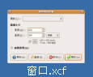
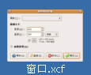
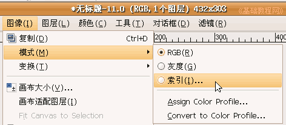
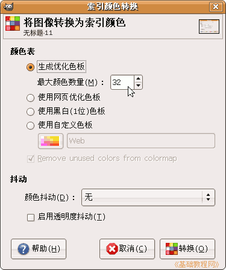
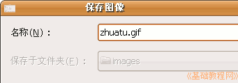
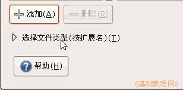
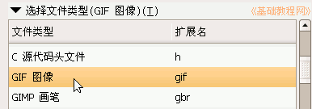
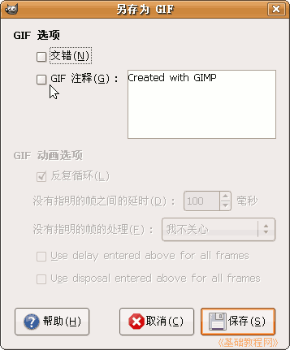

GIMP操作基础教程
作者：Teliute 来源：基础教程网
十、优化GIF图像 返回目录
网页中常常使用JPG图像和GIF 图像，GIF图像在处理颜色较少的图像时，尤其具有优点，下面我们来看一个练习；
1、启动GIMP
1）点上面板栏的菜单“应用程序－图像－GIMP图片编辑器”，就可以启动GIMP程序；
2）程序启动完成后，出来两个长条面板，如果还有一个“日积月累”面板，可以去掉下面的勾，点“关闭”；

2、优化 GIF 图片
1）点菜单“文件－打开..”命令，找到自己的文件夹，打开上次保存的“窗口.xcf”文件；
 


在出来的“索引转换”对话框中，把第一个里的最大颜色数量改为32，点“转换”按钮；

3）再点菜单“文件－另存为”命令，在出来保存对话框中，文件名输入 zhuatu.gif ，也就是加上了文件类型，注意这儿都是输入英文，

4）这儿也可以在对话框的左下角，点击“选择文件类型(按扩展名)”折叠按钮，然后选择“GIF 图像”，然后再折叠这个列表；
 
5）点“保存”按钮，出来一个选项对话框，可以把里面的注释改成自己的，或者去掉勾，然后点保存即可；

本节学习了GIMP中保存和优化 GIF 图像的 基本方法，如果你成功地完成了练习，请继续学习；本教程由86团学校TeliuTe制作|著作权所有，商业用途请与作者联系
基础教程网：http://www.laxjyj.com/teliute/
美丽的校园……
转载和引用本站内容，请保留版权信息和本站链接。